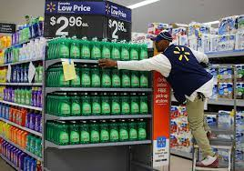
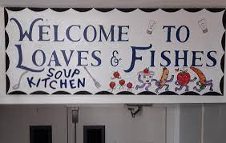

At Walmart I was a CAP2 associate for almost 2 years. I stocked shelves and unloaded
trucks of general merchandise. During a normal shift I would clock in, check in with my
manager and start stocking. Working the weekends, I was usually on the truck, but
during the weekdays I only had to stock. I also had to answer questions from customers
about where things are at, do we have any more in the back, and do you know when you
are getting more in stock. I learned and memorized almost every item in the store. I also
made new friends and acquaintances from the people that came and went from
Walmart while I was working there.

Working for a company like Walmart has its pros and cons. My favorite part about Walmart is that I had the same hours every week, but the schedule would come out like 3 weeks in advance so if you wanted a day off work you would have to put it in almost a month in advance. Calling out of work was also okay since you could have 6 call outs, before you would be fired since they are such a big company.
Main Event is a video game arcade like place like Dave and Busters that has bowling,
laser tag and an arcade. I worked as a server, and I learned a lot of important life skills
including communication, teamwork, and multitasking. I also learned that not
everything will come to you right away. I used communication whenever I had to ask the
chef for something extra or asking for help from one of the service supports for help.
Building on that teamwork is learned through everyone working together to give
customers the best service possible. Jumping right in to be a server is a lot to take in
since it requires one to juggle lots of things at the same time. Putting in drink/food
orders, checking up on tables, and making sure they are receiving their orders on time.
Overall, I really enjoyed my job at Main Event. It was stressful at some points, but it was all worth it in the end. I made great friends, and I learned a lot about the restaurant industry. I probably wouldn’t work another job like that, but at least I know what it is like to work in food service.
Back in Colorado during the Coronavirus I volunteered through the local county as a
grocery shopper for senior citizens who were high risk patients. Since I was already
working at a grocery store it was an easy way to help people and was relatively simple.
My senior citizen was named JoAnn and she was so sweet. A lot of the time it was a
short list, but every week I got her some Hershey kisses and dog treats for her tiny dog.
This was also my first time constantly volunteering for a weekly thing and I think that it
made me a better person.
Looking back on it, I think this volunteer opportunity led me to become a better person and has led me to think more about the world around me. An hour a week is pretty much nothing in the long run, at least for me, and it makes people’s day better around me.
On the last Thursday of the month, I volunteered at loaves and fishes in Columbia, MO.
Loaves and Fishes is a food bank that serves underprivileged people. I would do this
through my church group called Ukirk, and we would get there early enough to set up
tables and chairs along with preparing the food to be served. At the end we would also
clean up everything. This was a nice opportunity to see how privileged I am and no
matter how bad I think my life is it could always be worse. I also met some nice people
that do this a lot more than I do and that is always good to see.

I really enjoy volunteering at this place because it makes me feel good and it is always
nice to help people in need. Even though I’m not doing too much helping a little bit is
better than not helping at all.